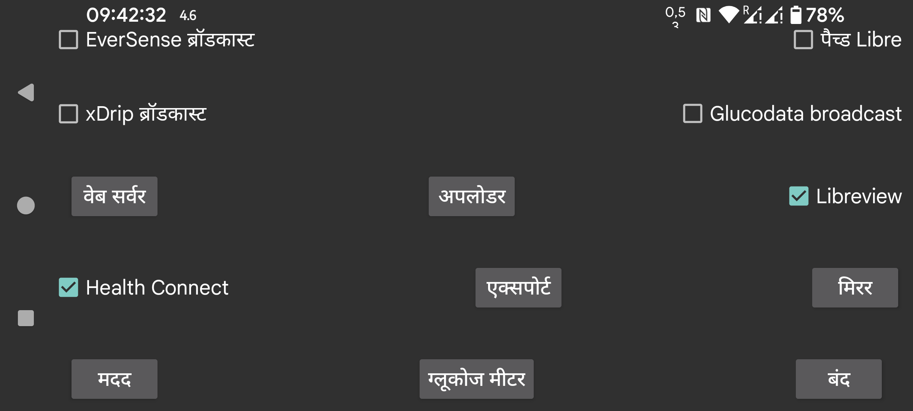

प्रत्येक मिनट के ग्लूकोज मानों को Health Connect पर भेजें। आप इन ग्लूकोज मानों तक अन्य ऐप को पहुंच दे सकते हैं, उदाहरण के लिए Google Fit। अन्य ऐप्स फिर से Google Fit के डेटा तक पहुंच सकते हैं।
Freestyle Libre 2 और 3 ग्लूकोज मानों और मात्राओं को Libreview पर भेजने और Freestyle Libre 3 सेंसर सक्रियण के दौरान उपयोग की गई account id प्राप्त करने के लिए Libreview से कनेक्ट करें। सेटिंग्स बदलने के लिए छुएं।
पैच्ड Libre ब्रॉडकास्ट के साथ स्वयं कुछ गलत नहीं है, पर xDrip मानों को संशोधित करता है जब यह उन्हें पैच्ड Libre ब्रॉडकास्ट से प्राप्त करता है। क्योंकि उपयोगकर्ता इस ब्रॉडकास्ट का उपयोग केवल इसी तरह करते हैं, मैंने ब्रॉडकास्ट हटाने की योजना बनाई।
xDrip मानों को संशोधित नहीं करता जब यह EverSense ब्रॉडकास्ट से ग्लूकोज मान प्राप्त करता है या यदि Juggluco में वेब सर्वर का उपयोग एक Nightscout डेटा स्रोत के रूप में किया जाता है।
एक और ग्लूकोज ब्रॉडकास्ट। इसका उपयोग xDrip को हर मिनट एक ग्लूकोज मान भेजने के लिए किया जा सकता है। xDrip में आपको Hardware Data Source के रूप में “640G/EverSense” सेट करने की आवश्यकता है।
xDrip 5 मिनट में एक मान पर अपने आग्रह के कारण लगभग सभी को नज़रअंदाज़ कर देगा। आप xDrip के स्रोत कोड को संपादित करके इस प्रतिबंध को हटा सकते हैं। app/src/main/java/com/eveningoutpost/dexdrip/models/BgReading.java में 4 * 60 * 1000 को 55 * 1000 में बदलें, ताकि यह बन जाए:
public static BgReading readingNearTimeStamp(long startTime)
{
long
margin = (55 * 1000);
return
readingNearTimeStamp(startTime, margin);
}
पैच्ड Libre ब्रॉडकास्ट पर लाभ यह है कि xDrip ग्लूकोज मानों को किसी अनिर्दिष्ट तरीके से परिवर्तित नहीं करता।
वही ब्रॉडकास्ट भेजें जो xDrip में "Settings->Inter-app settings->Broadcast locally" के साथ चालू है। AndroidAPS जैसे ऐप्स इसे सुनते हैं। मूल xDrip ब्रॉडकास्ट के विपरीत जो हर 5 मिनट में ब्रॉडकास्ट होता था, Juggluco इस ब्रॉडकास्ट को हर मिनट ब्रॉडकास्ट करता है।
एक नया ब्रॉडकास्ट जिसका कार्य xDrip ब्रॉडकास्ट के समान है। एक सरल उदाहरण ऐप जो प्राप्त ग्लूकोज मानों को logcat में लिखता है आप यहाँ पा सकते हैं: Glucose broadcasts। यदि आप G-Watch में Juggluco को डेटा-स्रोत के रूप में निर्दिष्ट करते हैं, तो आपको यह ब्रॉडकास्ट चालू करना होगा।
इस ब्रॉडकास्ट को सुनने वाले ऐप्लिकेशन दिखाए जाते हैं। उन ऐप्स को चेक करें जिन्हें आप यह ब्रॉडकास्ट भेजना चाहते हैं।
वेब सर्वर जिसका उपयोग xDrip घड़ियों और कुछ Nightscout ऐप्स के साथ किया जा सकता है। पहले xDrip वेबसर्वर कहा जाता था।
Nightscout सर्वर पर अपलोड करें।
इंटरनेट कनेक्शन के माध्यम से Juggluco के दूसरे इंस्टेंस को सारा डेटा भेजें जिससे दूसरे डिवाइस पर Juggluco का एक क्लोन बनता है। मौजूदा डेटा ओवरराइट हो जाएगा।
डेटा को एक फ़ाइल में सहेजें।